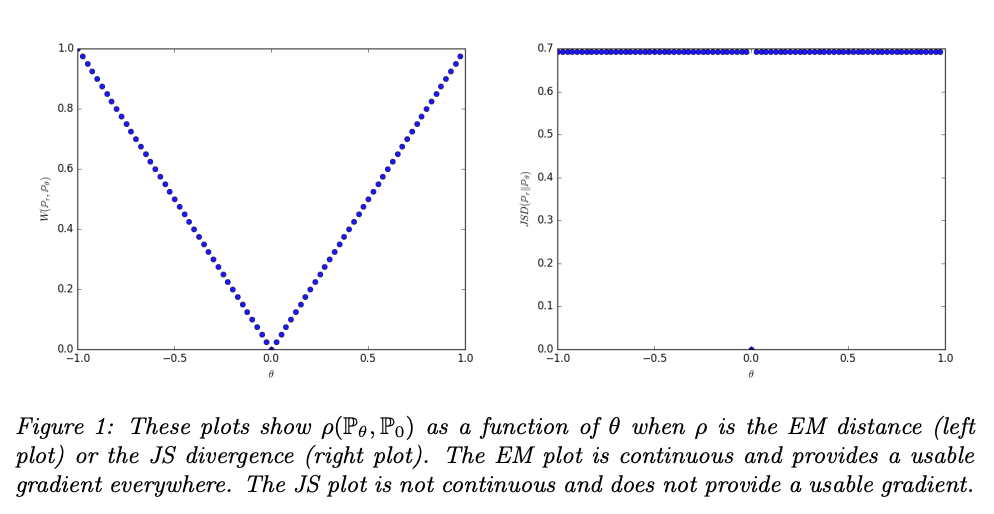
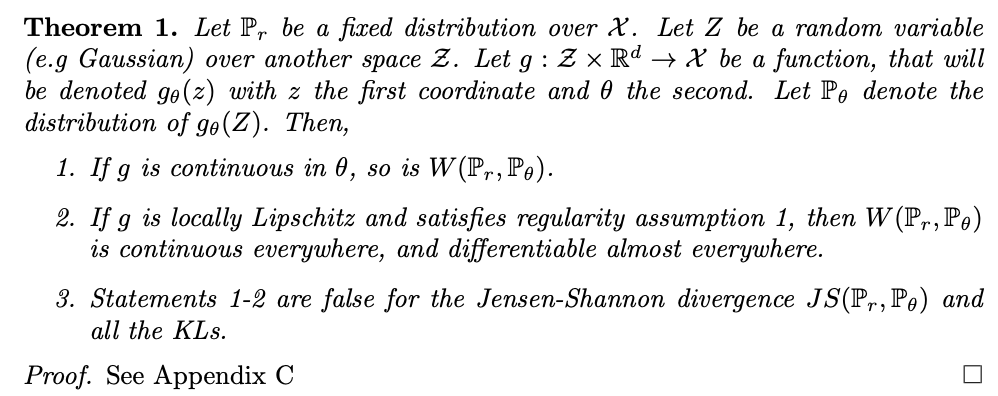
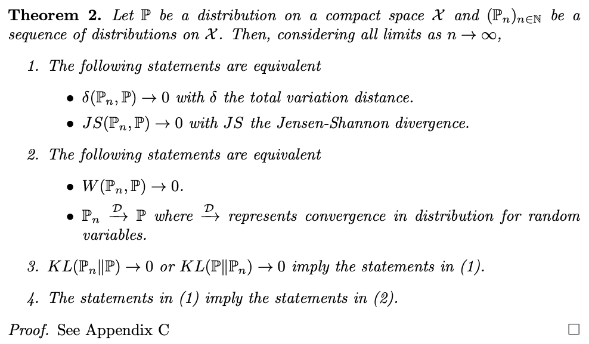
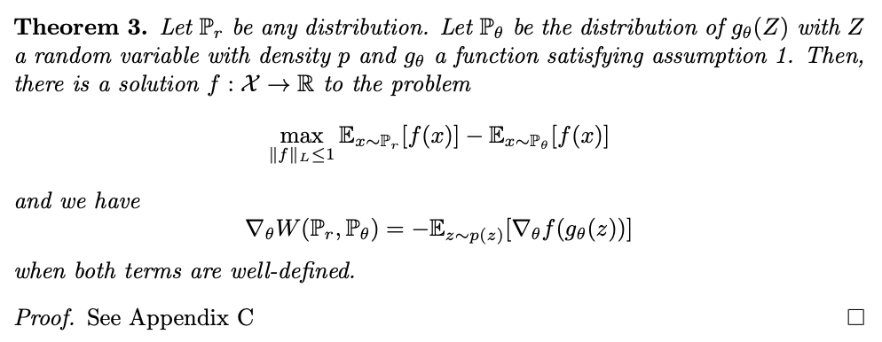
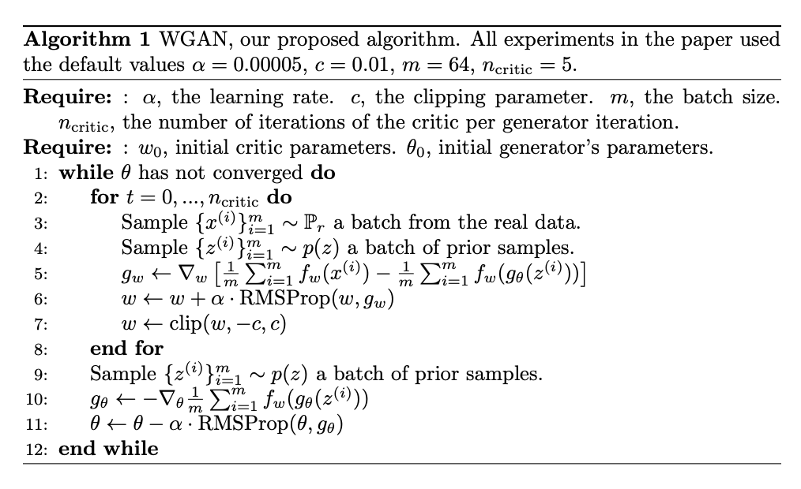
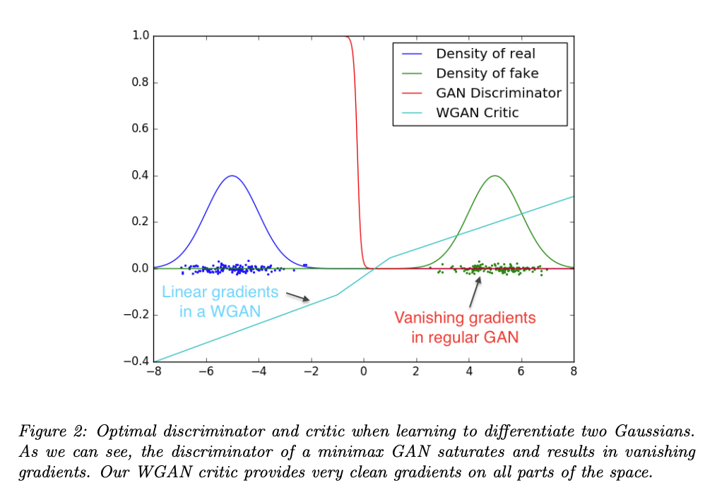
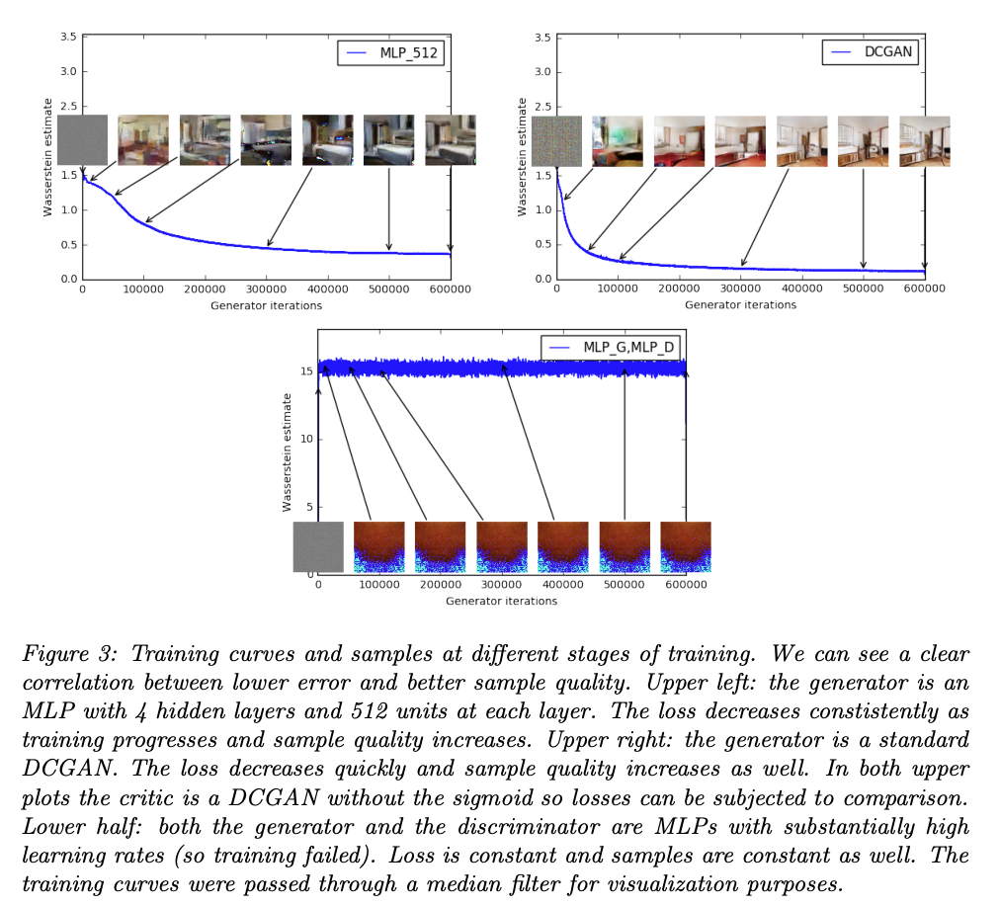
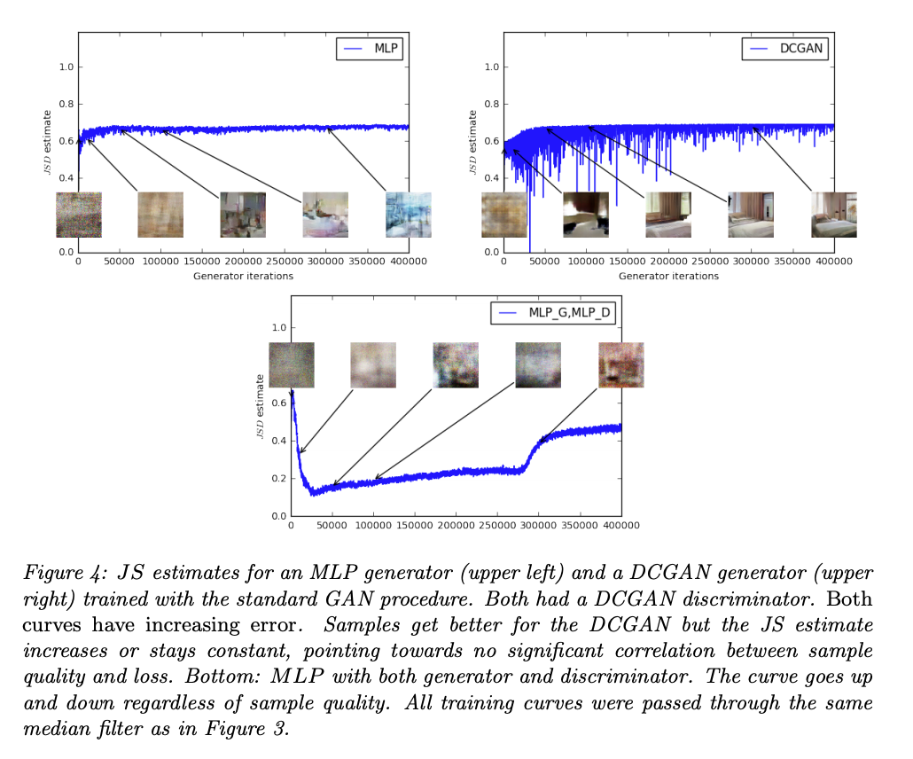

Wasserstein GAN
by Jung Jaeeun
오늘 포스팅은 Wasserstein GAN에 대해 알아보겠습니다. 모두 아시다시피, GAN은 data의 distribution을 배우는 generative model에 해당합니다. 그렇다면 probability distribution, 즉 확률분포를 학습한다는 것은 정확히 무슨 뜻일까요? WGAN에 대해 알아보기 전에 보다 일반적인 얘기를 먼저 하고 넘어가려고 합니다.
parametric한 approach에서는 우리 데이터의 분포가 $P_{\theta} \text{ where }\theta \in \mathbb{R^{d}}$에 속한다고 가정하고 data의 likelihood를 최대화하는 방향으로 $\theta$를 추정합니다.
$\hat{\theta} = argmax_{\theta}\frac{1}{m}\sum_{i=1}^{m}\log P_{\theta}(x^{(i)})$
여기서 log는 단조 증가 함수이므로 위의 식이 성립합니다. asymptotic 하게 위의 식은 $KL(\mathbb{P_{r}} \vert\vert \mathbb{P_{\theta}})$를 최소화하는 것과 같습니다.
확률분포간의 거리를 재는 방법이 있다면 우리는 데이터를 통해 추정한 분포와 실제 분포와의 거리를 최소화하려고 할 것이고, KL divergence는 일반적으로 분포간의 거리/유사도를 측정하는데 가장 많이 쓰이는 metric이기 때문에 우리의 직관과 매우 일치합니다.
Different Distances
그러나 확률분포간의 거리를 재는 방법이 KL divergence 하나만 있는 것은 아닙니다. 이 논문에서는 4가지 방법들에 대해 간단하게 소개를 해줍니다.
-
Total Variation distance: $\delta(\mathbb{P_{r}}, \mathbb{P_{g}}) = \sup_{A \in \sum} \vert \mathbb{P_{r}}(A)-\mathbb{P_{g}}(A) \vert$
-
Kullback-Leibler divergence: $KL(\mathbb{P_{r}} \vert\vert \mathbb{P_{g}}) = \int log\frac{P_{r}(x)}{P_{g}(x)}P_{r}(x)d\mu(x)$
-
Jensen-Shannon divergence: $JS(\mathbb{P_{r}} , \mathbb{P_{g}}) = KL(\mathbb{P_{r}} \vert\vert \mathbb{P_{m}})+KL(\mathbb{P_{g}} \vert\vert \mathbb{P_{m}})$
-
Earth-Mover distance: $W(\mathbb{P_{r}} , \mathbb{P_{g}}) = \inf_{\gamma \in \prod{(\mathbb{P_{r}} , \mathbb{P_{g}})}} \mathbb{E_{(x, y)\thicksim\gamma}}[\vert\vert x-y \vert\vert]$
논문에서 제시한 example을 한 번 살펴봅시다. $Z \thicksim U[0, 1]$인 확률변수라고 하고 $\mathbb{P_{0}}$을 $(0, Z)$의 분포, $\mathbb{P_{\theta}}$를 $(\theta, Z)$의 분포라고 합니다. 앞에서 소개한 여러 distance metric에 따르면 두 분포의 distance는 다음과 같습니다. 유도과정은 생략하겠습니다.
-
$W(\mathbb{P_{0}} , \mathbb{P_{\theta}}) = \vert \theta \vert$
-
$JS(\mathbb{P_{0}} , \mathbb{P_{\theta}}) = \log2 \text{ if } \theta \neq 0 \text{ else } 0$
-
$KL(\mathbb{P_{0}} \vert\vert \mathbb{P_{\theta}}) = +\infty \text{ if } \theta \neq 0 \text{ else } 0$
-
$\delta(\mathbb{P_{0}}, \mathbb{P_{\theta}}) = 1 \text{ if } \theta \neq 0 \text{ else } 0$
이때, 여기서 흥미로운 점은 $\theta \in [-\infty, +\infty]$에서 연속인 함수는 EM distance 밖에 없다는 사실입니다. 그림으로 나타내면 아래와 같습니다.

왼편은 EM distance를 나타낸 것이고 오른편은 JS distance를 나타낸 그림입니다. 그러나 original GAN paper에서는 JS divergence를 기준으로 generator를 업데이트 해줍니다. 만약 그림과 같은 상황이 펼쳐진다면, gradient는 0이 되고 정상적인 학습이 이루어지지 않을 것입니다. 그에 비해 EM distance를 기준으로 generator를 학습한다면 원활한 학습이 이루어질 것입니다.
결국, 이 논문의 essence는 NN으로 하여금 더 학습이 용이한 확률분포 distance metric을 정의하고 이를 기반으로 GAN을 학습시켰더니 더 잘 나왔다는 것입니다. 여기서 논문에 나와있는 Theorem 1,2를 보고 가겠습니다.

1번은 우리가 estimate 하고자하는 parameter의 space가 continuous 하다면 $W(\mathbb{P_{r}}, \mathbb{P_{\theta}})$도 continuous 하다는 내용입니다. 2번은 mapping function $g$가 locally Lipschitz하고 regularity assumption 1을 만족한다면 $W(\mathbb{P_{r}}, \mathbb{P_{\theta}})$가 거의 모든 곳에서 미분가능하고, 이는 역전파를 가능하게 합니다. 3번에서는 1, 2가 $JS(\mathbb{P_{r}}, \mathbb{P_{\theta}}), KL(\mathbb{P_{r}}\vert\vert \mathbb{P_{\theta}})$에 대해서는 성립하지 않는다는 내용입니다.
여기서 핵심은 $W(\mathbb{P_{r}}, \mathbb{P_{\theta}})$가 거의 모든 곳에서 미분가능하기 때문에 올바른 gradient를 전달한다는 것입니다. 그에 비해 $JS(\mathbb{P_{r}}, \mathbb{P_{\theta}}), KL(\mathbb{P_{r}}\vert\vert \mathbb{P_{\theta}})$는 그렇지 않아서 학습에 차질이 생깁니다. locally Lipschitz 하다는 것은 rough하게 말하자면 parameter space가 compact하고, 일정한 거리안에 모여있다는 뜻입니다. 이에 대해서는 뒤에서도 나옵니다. regularity asssumption은 확률분포에 대한 조건인데, 매우 loose한 조건이라 이를 만족하지 않는 확률분포를 찾아보기가 더 힘듭니다.
따라서 우리는 EM distance를 기준으로 GAN을 학습시키면 되겠습니다.

1-4까지 읽어보시면, $W(\mathbb{P_{r}}, \mathbb{P_{\theta}}) \rightarrow 0$와 generator가 mapping 하는 분포가 데이터의 분포에 수렴하는 것이 동치임을 알 수 있습니다. 또한 KL, JS divergence 보다 EM distance가 weak한 개념이기 때문에 최적화가 보다 용이할 것이라고 기대할 수 있습니다. 논문에서는 이를 EM distance가 매우 sensible하다는 근거로 언급합니다.
Wasserstein GAN
그러나 $W(\mathbb{P_{r}} , \mathbb{P_{g}}) = \inf_{\gamma \in \prod{(\mathbb{P_{r}} , \mathbb{P_{g}})}} \mathbb{E_{(x, y)\thicksim\gamma}}[\vert\vert x-y \vert\vert]$ 이 식을 직접적으로 다루기엔 문제가 있습니다. infimum(그냥 minimum으로 생각하시면 편합니다.) term이 intractible 하기 때문입니다. 그래서 우리는 Kantorovich-Rubinstein duality를 활용해서 다음과 같이 바꿔줍니다.
$W(\mathbb{P_{r}} , \mathbb{P_{g}}) = \sup_{\vert\vert f\vert\vert_{L \leq 1} } \mathbb{E_{x \thicksim P_{r}}}[f(x)] - \mathbb{E_{x \thicksim P_{\theta}}}[f(x)]$
이때, $\vert\vert f \vert\vert_{L \leq 1}$는 locally Lipschitz를 만족시키기 위한 조건입니다. 그러나 실제로는 이 조건이 NN의 flexibility를 제한하거나 gradient가 saturate 되는 등 여러 문제가 생기기 때문에 $\vert\vert f \vert\vert_{L \leq K}$를 사용했다고 합니다. 이는 gradient clipping을 통해서 쉽게 구현할 수 있습니다. 또한 식을 보면 우리가 기존에 학습시키는 NN과 크게 다르지 않은, tractible한 식이 됩니다.
어째됐든, 이제 우리의 문제는 $\max_{w \in \mathcal{W}} \mathbb{E_{x \thicksim P_{r}}}[f(x)] - \mathbb{E_{x \thicksim P_{\theta}}}[f(x)]$로 바뀌게 됩니다. $\mathcal{W}$는 앞서 말씀드린 $\vert\vert f \vert\vert_{L \leq K}$를 만족하는 공간입니다. 요약하면 다음과 같습니다.

그러면 이제 기존 GAN과 마찬가지로 $W(\mathbb{P_{r}} , \mathbb{P_{g}})$에 대해 generator는 minimize, discriminator는 maximize를 하는 minimax problem을 풀면 됩니다. 수도코드는 매우 간단합니다.

여기서 설명드릴 점은 두 가지 입니다.
- weight clipping을 통해 Lipschitz constraint를 구현했으나, 이건 좋은 방법이 아닙니다. weight의 norm을 제한한다면 gradient가 stuck 되는 현상이 나타날 수 있습니다. 또한 모멘텀을 사용하는 Adam optimizer를 사용했을때 오히려 역효과가 나기 때문에 비교적 학습이 오래 걸리는 RMSProp optimizer를 사용했습니다.
- 기존 GAN은 generator가 mapping을 제대로 못하는 상황에서 discriminator가 optimal 상태에 도달하기가 쉽고, 이는 gradient가 죽어버리는 결과를 가져옵니다. 그러나 WGAN에서는 discriminator가 optimal 상태에 도달하는 것이 generator에게도 도움이 됩니다. 이로 인해 mode collapse도 방지할 수 있다고 논문에서는 주장합니다.
기존 GAN과 WGAN의 그라디언트를 나타내는 그림을 보겠습니다.

기존 GAN과 다르게 WGAN에서는 그라디언트가 linear 하기 때문에 saturate 되지 않고, 의미있는 정보를 전달할 수 있습니다.
Empirical Results: Meaningful loss metric
마지막으로 설명드릴 내용은 EM distance가 meaningful loss metric으로 사용될 수 있다는 점입니다. 그림으로 한 번 보겠습니다.


JS divergence 보다 EM distance가 우리 직관에 더 일치하는 결과를 보여주고 있습니다.
Conclusion
이번 포스팅에서는 GAN의 loss metric을 개선한 Wasserstein GAN에 대해 알아보았습니다. 수학적인 내용이 많아 쉽지는 않지만 아이디어 자체는 심플한 논문입니다. 이를 더 개선한 Improved Training of Wasserstein GANs 논문이 있는데, 다음에 기회가 되면 다뤄보려고 합니다.
References
Subscribe via RSS